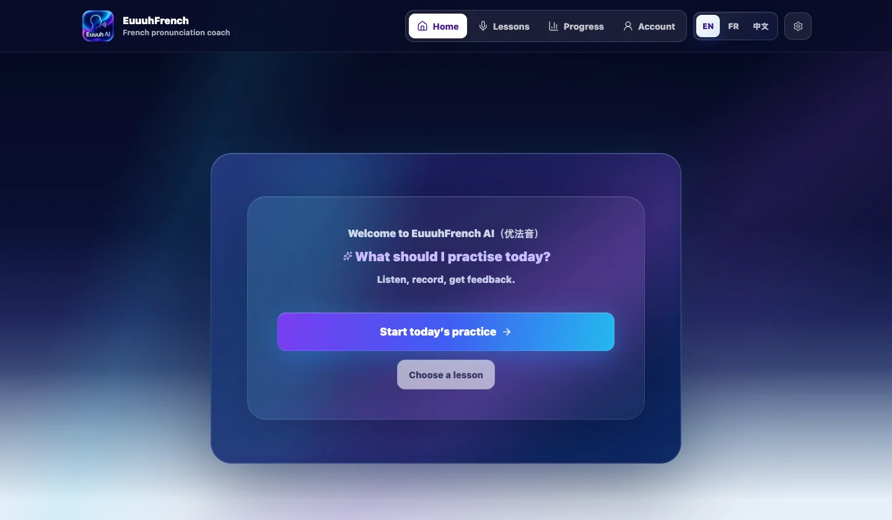

EuuuhFrench AI has changed quickly, so this post groups the early updates instead of writing one note for every small version.

v1.0 was the first usable version. Learners could choose a difficult French sound, listen to native audio, record themselves, replay their attempt, and receive pronunciation feedback.
v1.1 and v1.2 made practice less repetitive. The app added quick lessons, word practice, sentence practice, and more work on nasal vowels such as an/en, on, and in/ain.

v1.3 and v1.4 made the practice flow deeper. There is more audio-backed practice for each main sound, clearer nasal help, and small contrast pairs such as deux / doux and vin / vent.

I also started adding progress and account foundations. I see that as support work: useful for returning to practice, but not the main story of the app yet.
The direction is simple: short guided practice, real French audio, focused sounds, and feedback that helps learners notice what to try next. The app is still experimental and research-informed, not a replacement for teacher guidance.
Developer notes
The early work moved from one guided pronunciation loop to a more structured practice app with clearer routing, content, feedback, and progress states.
Main areas touched:
- practice-mode routing for quick, word, and sentence practice
- audio-backed lesson content for difficult French sounds
- native audio mapping for examples and practice items
- nasal vowel and contrast-practice content
- feedback flow for listening, recording, retrying, and reviewing
- local progress state and dashboard polish
- i18n strings for English, French, and Chinese
- PWA polish, legal-page polish, and browser QA
Recent checks:
- static JavaScript and sitemap checks
- desktop and mobile browser QA
- EN / FR / 中文 language-switching checks
- developer-notes expand/collapse check